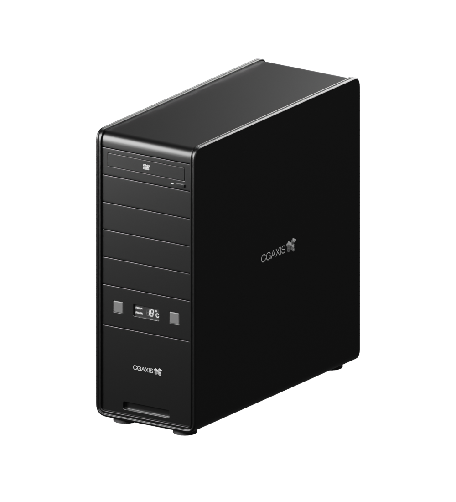

01 — DIGITAL SHOWROOM
CRATE看见
每一面.
从轮廓，到细节。
在光影与旋转之间，探索一台机箱的完整形态。
+
源自真实三维工程
REAL GEOMETRY. REAL PERSPECTIVE.
C / 001
正在准备三维场景

正在载入真实模型0%
↔ 拖动旋转 · 滚轮缩放
VIEW / 视角
02 — A CLOSER LOOK
结构，自有秩序。
从前面板到后部结构，切换视角查看模型细节。
FORM STUDY / CRATE↗
- 源工程
- crate.blend
- 模型组件
- 06 个
- 工程包围盒 · 宽 × 深 × 高
- 200 × 503 × 510 mm
- 显示方式
- 实时三维 · PBR 材质